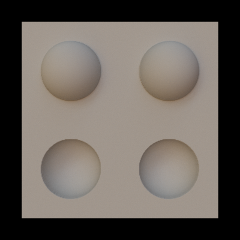

Light from above¶
{kind=link}
This piece of code makes a model for the light-from-above assumption demo (the scene actually has a light that’s above). It demonstrates how to use custom (not random) locations for user-defined perturbations. There are two bumps in the place (the ones on top), and two dents (bottom). Code for producing the model:
% A function that makes a "dome" shape, a hemisphere. The first
% input argument is distance, the second is the radius of the
% half-sphere. Negative radius makes a dent, positive a bump.
f = @(d,r) sign(r)*(d<=r).*sqrt(r^2 - d.^2);
% Locations on the plane for the bumps
loc_x_bump = [-.25 .25];
loc_y_bump = [.25 .25];
% Locations for the dents
loc_x_dent = [-.25 .25];
loc_y_dent = [-.25 -.25];
% Put all bump locations in a cell array
loc = {{loc_x_bump,loc_x_dent},{loc_y_bump,loc_y_dent}};
% Make the model. The third input argument gives the parameters with
% which the above-defined function is called. The first row gives the
% parameters for bumps, the second for dents. The three parameters
% are: number of bumps/dents, a cut-off value, and the radius.
objMakeCustom('plane',
f,
[2 .15 .15; 2 .15 -.15],
'locations',loc,
'normals',true,
'bumps.obj');
XML for rendering with Mitsuba. This example uses an environment light map by Bernhard Vogl (downloaded from http://dativ.at/lightprobes/). If you don’t have that map, you will have to use another light source.
<scene version="0.5.0">
<integrator type="path">
<boolean name="hideEmitters" value="true"/>
</integrator>
<sensor type="perspective">
<transform name="toWorld">
<lookAt origin="0, 0, 2" target="0, 0, 0" up="0, 1, 0"/>
</transform>
<float name="farClip" value="30"/>
<sampler type="ldsampler">
<integer name="sampleCount" value="200"/>
</sampler>
<film type="hdrfilm">
<integer name="width" value="512"/>
<integer name="height" value="512"/>
<rfilter type="gaussian"/>
</film>
</sensor>
<shape type="obj">
<string name="filename" value="bumps.obj"/>
<bsdf type="diffuse">
<srgb name="reflectance" value="#6d7185"/>
</bsdf>
</shape>
<emitter type="envmap">
<string name="filename" value="../corkscrew/20060807_wells6_lp.hdr"/>
<float name="scale" value="1"/>
<transform name="toWorld">
<rotate y="1" angle="90" />
</transform>
</emitter>
</scene>